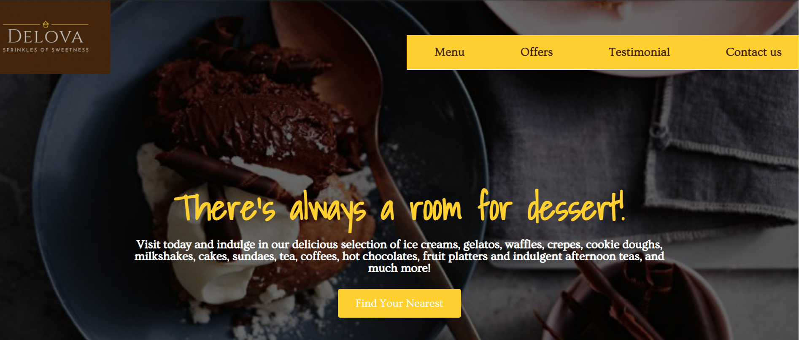

About Me
I am a creative and communicative person with a previous background in pharmacy and experience in business development, project management, and costumer relationship. I'm seeking to take next career step focused on Front-end developer to utilize my creativity, knowledge, and skills because in nowadays business needs attention in technology (especially website) to improve engagement with business partners. Leading, motivating, and able to work individually as well in teams to achieve project goals and achieving a high-degree of client satisfaction.
Personal Info & Education
| Email : | ingrid_fortunata@yahoo.com | ||
| Phone : | +62 896 2423 6415 | ||
| DOB : | October 1st, 1994 | ||
| Informal Education : | Glints Academy - Binar Academy Batch 10 |
Year: Dec 2020 - Mar 2021 |
Front End |
| Formal Education : | University of Indonesia |
Year: 2012 - 2017 |
Apothecary Degree |
Experiences
PT Megasetia Agung Kimia
2019-2020
Job Desc
Market research, sales report, projects management, products management, customer services. Other projects: exhibition, designing prototype and exhibition materials.
PT Bernofarm
2018-2019
Job Desc
Market research, sales report, projects management, products management, customer services. Other projects: exhibition, designing products list and website.
PT Dexa Medica
2017
Job Desc
Sourcing and purchasing packaging materials, suppliers management.
Computer Skills
HTML, Canva, Microsoft Office
CSS, Wordpress (Elementor)
Javascript, SQL, Adobe Photoshop, Git, Prezi
My Recent Works / Projects
Whiteboard
Trello App - Final Project, March 17th, 2021
This is a final project in Glints-Binar Academy batch 10 (in team). We made a to-do app similar to Trello using React JS (using Redux Thunk & Persist), Sass, and Backend team API.
Actflix
Movie App - Mini Project, Feb 8th, 2021
This is a mini project in Glints-Binar Academy batch 10 (in team). We made a movie app similar to Netflix using React JS, CSS, tmdb API, and firebase for login and signup.
To view: https://actflix03.herokuapp.com/
Catch Pokemon App
Catch Pokemon Project, Jan 20th, 2021

This is a small project by myself while in Glints-Binar Academy batch 10 class. I made a simple catch pokemon card app using React JS, CSS, and pokemon API. The search field is functioning well too!
To view the code: https://gitlab.com/ingrid-fortunata/pokemon-catch-app-ingrid
Profile Page
Profile Page Project, Jan 4th, 2021
This is just a simple project by Binar class while in Glints-Binar Academy batch 10. I made my own profile page (this one) using HTML, CSS, and Javascript.
To view the code: https://ingrid-fortunata.github.io/ingrid-profile.github.io/frontpage.html
Digital Clock
Digital Clock Project, Jan 4th, 2021
This is just a simple project by myself while in Glints-Binar Academy batch 10. I made a simple realtime digital clock using HTML, CSS, and Javascript.
To view the code: https://gitlab.com/ingrid-fortunata/digital-clock-ingrid
Delova
Dessert Restaurant Website Project, Nov 12th, 2020
This is a final Project for Habis Kerja.com scholarship which I learn about the website design, including UI/UX. I made a simple responsive website using Wordpress utilized with Elementor.
To view: http://delova.000webhostapp.com/
Collagen Drinks
PT. Megasetia Agung Kimia Hampers Project, Dec 25th, 2019
This is Christmas Hampers Project for PT. Megasetia Agung Kimia which I designed it with Canva.
Astaxanthin-Glutathione Drinks
PT. Megasetia Agung Kimia Exhibition Project, Nov 1th, 2019
This is Prototype Packaging Design Project for PT. Megasetia Agung Kimia which I designed it with Canva.